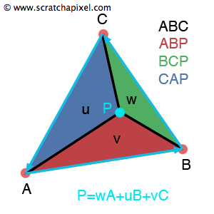

Lecture #4: Triangle rasterization
Computer graphics in Game development
Ivan Belyavtsev
24.01.2020
Rasterization
- We have a wire frame image
- Need to fill triangles by color
Edge function
Let’s take two points \((X, Y)\) and \((X+dx, Y=dy)\)
Define an edge function:
\[E(x, y) = (x - X)dy - (y - Y)dx\]
[1]
Edge function values
If \(E(x, y)>0\) then \((x, y)\) on the “right” side
If \(E(x, y)<0\) then \((x, y)\) on the “left” side
If \(E(x, y)=0\) then \((x, y)\) on the edge
[1]
Edge function view
 [1]
[1]
Clockwise vs counter-clockwise
 [2]
[2]
“Edge functione rasterization” experiment
Deduction phase
- We have a correct wire frame triangles
- We know about the edge function
- How to fill triangles by solid color?
- What about performance?
“Edge function rasterization” experiment
Experiment
Let’s implement it together
“Edge function rasterization” experiment
Reference
“Edge function rasterization” experiment
What is the new knowledge?
- Edge function rasterization is good to fill triangles by solid color
- Clockwise vertex order is required
Barycentric coordinates
Let exists \[P=uA+vB+wC\], where \(u+v+w=1\)
 [3]
2D cross product cheating
\[(u_1, u_2, 0) \times (v_1, v_2, 0) = (0, 0, u_1v_1-u_2v_1)\]
and compare with
\[E(x, y) = (x - X)dy - (y - Y)dx\]
“Barycentric flavor rasterization” experiment
Deduction phase
- We have a correct wire frame triangles
- We know about the edge function
- We know how to fill with solid color
- How to fill triangles by interpoladed color?
- What about performance?
“Barycentric flavor rasterization” experiment
Experiment
Let’s implement it together
“Barycentric flavor rasterization” experiment
Reference

“Barycentric flavor rasterization” experiment
What is the new knowledge?
- Barycentric flavor rasterization is good if you need interpolate something during rasterization
- Clockwise vertex order is required
References
1. Pineda J. A parallel algorithm for polygon rasterization // Proceedings of the 15th annual conference on computer graphics and interactive techniques. 1988. Pp. 17–20.
2. Rasterization: A practical implementation [Electronic resource]. 2015. URL: https://www.scratchapixel.com/lessons/3d-basic-rendering/rasterization-practical-implementation/rasterization-stage.
3. Ray tracing: Rendering a triangle [Electronic resource]. 2014. URL: https://www.scratchapixel.com/lessons/3d-basic-rendering/ray-tracing-rendering-a-triangle/barycentric-coordinates.